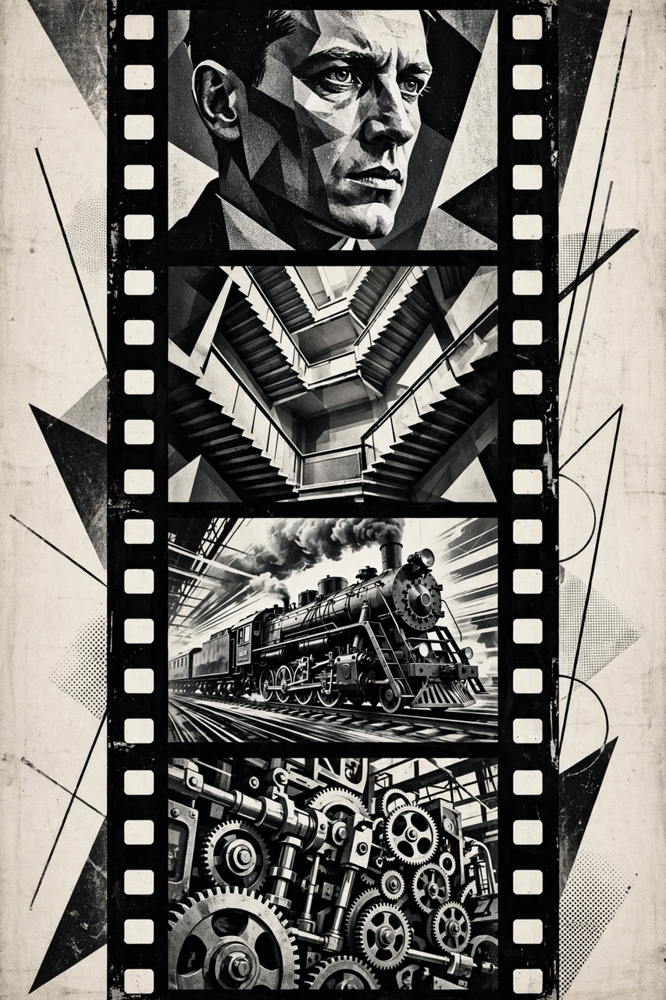

Film editing technique
| Montage | |
|---|---|
 A montage juxtaposes short shots to create new meaning | |
| Type | Film editing technique |
| Key figures | Sergei Eisenstein, Lev Kuleshov, Dziga Vertov |
Montage (from the French monter, "to assemble") is a film editing technique in which a series of short shots are sequenced to condense space, time, and information, or to generate meaning through juxtaposition that no single shot contains. The term has several meanings: in Soviet film theory it denotes editing as the very foundation of cinema; in Hollywood usage it commonly refers to a sequence — often set to music — that compresses a passage of time, such as a training montage.
In the 1920s Soviet filmmakers Lev Kuleshov and Sergei Eisenstein theorised that meaning in cinema arises from the collision of shots. The Kuleshov effect demonstrated that viewers derive more meaning from the interaction of two sequential shots than from a single shot in isolation. Eisenstein, in films such as Strike (1925), Battleship Potemkin (1925) — whose Odessa Steps sequence is among the most analysed in film history — and October (1928), developed "intellectual montage", juxtaposing images to provoke abstract ideas. He classified montage into metric, rhythmic, tonal, overtonal, and intellectual types.
Dziga Vertov pursued a related but distinct path with his "Kino-Eye" theory and the film Man with a Movie Camera (1929), using editing, split screens, and variable speeds to reveal truths invisible to the naked eye.
In classical Hollywood, montage sequences — popularised in the 1930s by Slavko Vorkapich — compressed narratives using dissolves, wipes, spinning newspaper headlines, and calendar pages. The modern "training montage", exemplified by Rocky (1976), condenses a character's preparation into a few minutes of escalating effort, usually driven by a song.